Исторические и справочные гербы
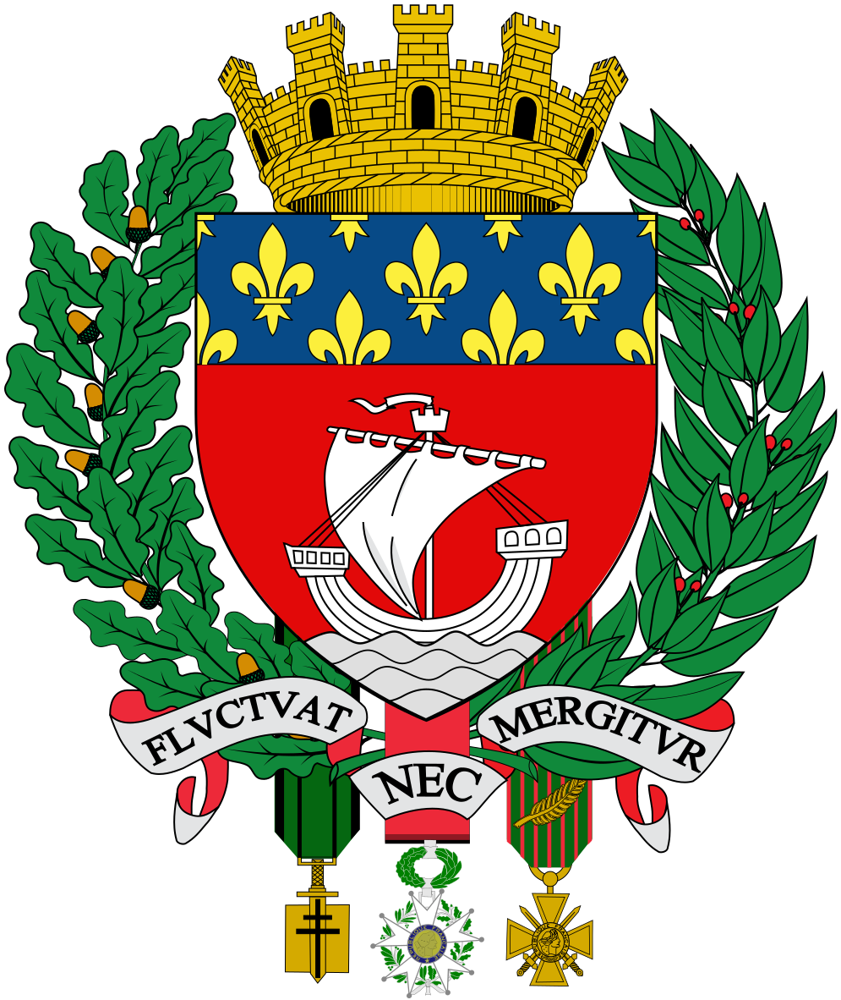

Paris
Guide. Places in this edition: 34.
OTIUM is the practice of deliberate leisure. In the classical sense, otium is not escape from work but time when attention returns to memory, landscape, and thought — without a utilitarian deadline.
We shape routes for lingering, not for checklist tourism. The goal is presence in a place rather than consumption of sights.
OTIUM is not a tour operator. It is an invitation to walk, pause, and leave a route unfinished if the light on a façade deserves another minute.
Исторические и справочные гербы

Guide. Places in this edition: 34.
Париж — столица Франции и один из ведущих мировых центров культуры, науки и дипломатии.
Галло-римский Лютеция, средневековый остров Сите, дворцы и бульвары XIX века, модерн и бельэпок сформировали музейный кластер и урбанистические образцы. Сена, кафе и университетская традиция поддерживают статус «города света».
Institut du monde arabe

Arc de triomphe de l'Étoile

Neoclassical triumphal arch at the star junction of twelve avenues; tomb of the Unknown Soldier beneath.
Commissioned by Napoleon; completed in the 1830s; relief sculpture tells revolutionary and imperial stories.
Terrace views sweep along the axe to La Défense and toward the Louvre.
Montmartre
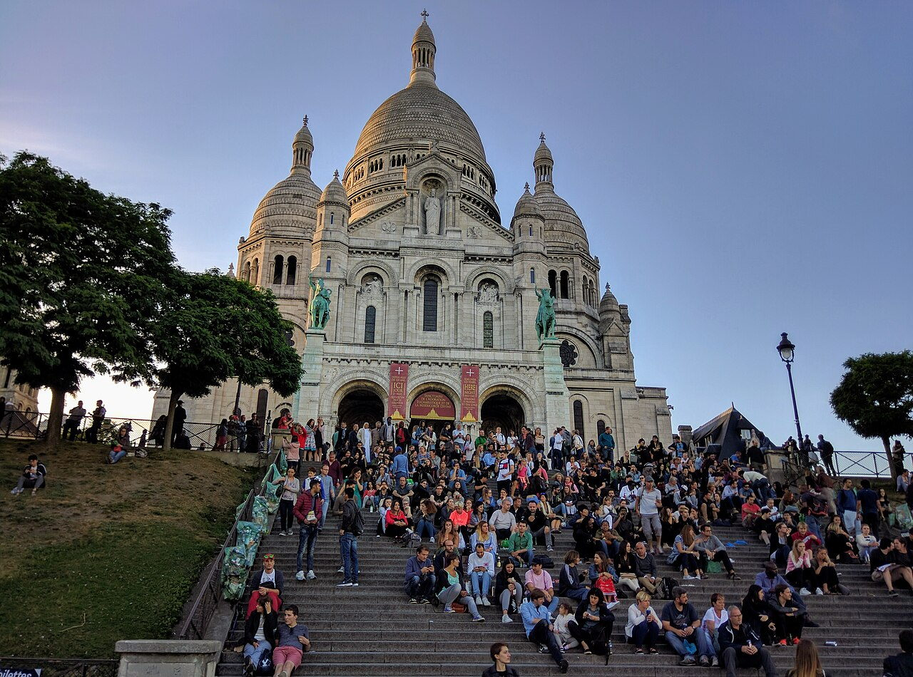
Lac Daumesnil

Musée Carnavalet

Centre Pompidou
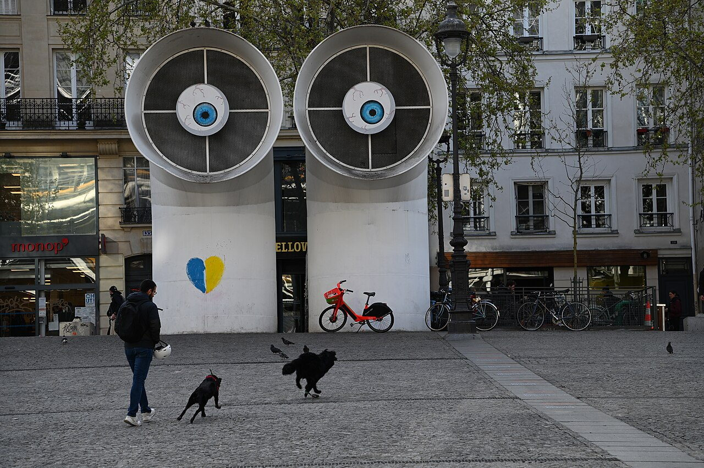
High-tech museum with color-coded ducts and pipes on the façade—modern and contemporary collections inside.
Renzo Piano and Richard Rogers' competition winner opened in 1977.
Major European hub for 20th- and 21st-century art and public library space.
Avenue des Champs-Élysées

Grand avenue from Place de la Concorde to the Arc de Triomphe—luxury shops, cinemas, and parade route.
Former market gardens became a ceremonial axis under successive regimes.
Bastille Day and finish line of the Tour de France.
Parc de la Villette

Conciergerie
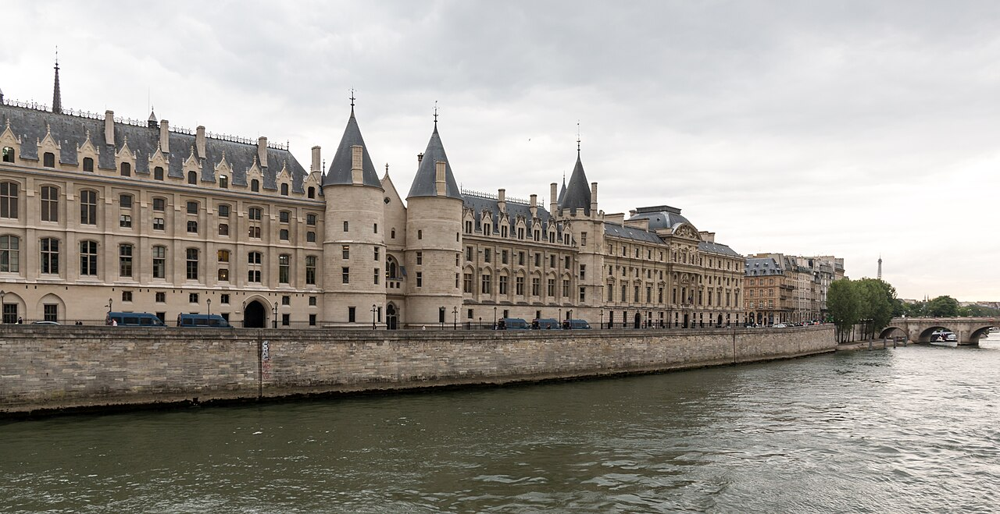
Medieval royal palace turned revolutionary prison—Marie Antoinette's cell is commemorated here.
Kings ruled from this island complex before Versailles; Revolutionary Tribunal sat downstairs.
Pairs with Sainte-Chapelle in the same Palais de la Cité compound.
Tour Eiffel
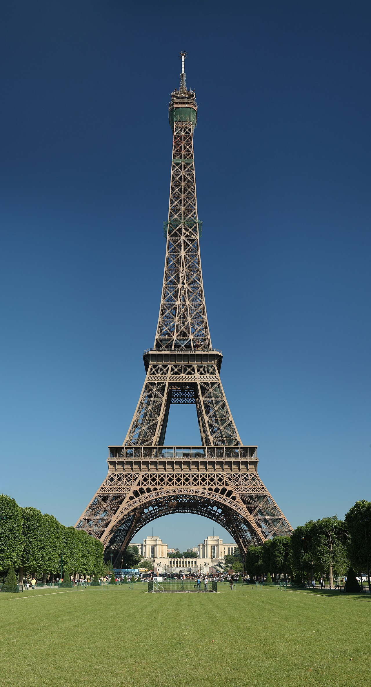
Iron lattice tower built for the 1889 World's Fair; still the most visited paid monument in the city.
Designed by Gustave Eiffel's team; controversial at first, later embraced as the skyline signature of Paris.
Observation decks and night lighting make it both museum piece and living landmark.
Grande Arche de la Défense
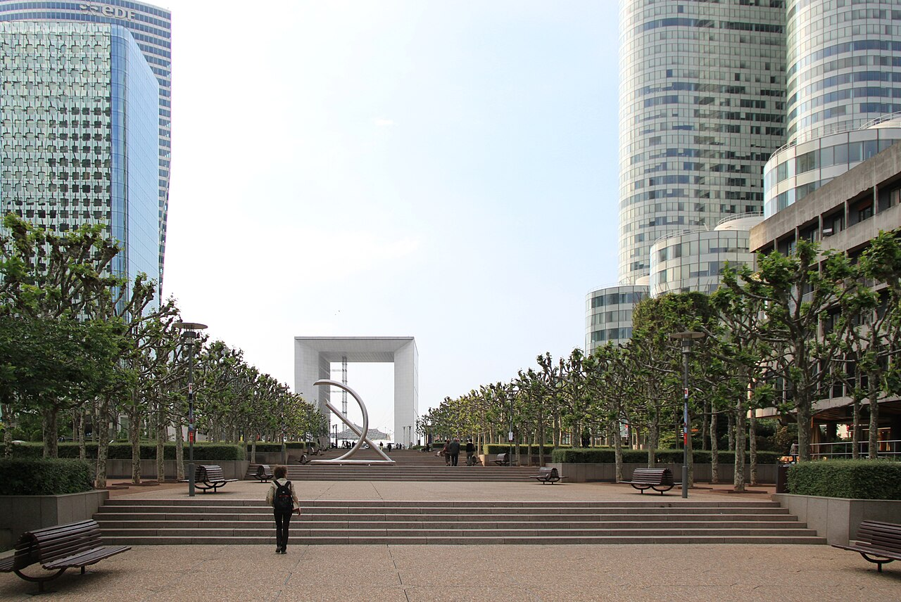
Late 20th-century hollow cube monument closing the historic axis westward from the Arc de Triomphe.
François Mitterrand-era grands projets; opened in 1989.
Business district landmark with rooftop perspectives on good weather days.
Le Marais

Hôtel de Ville de Paris
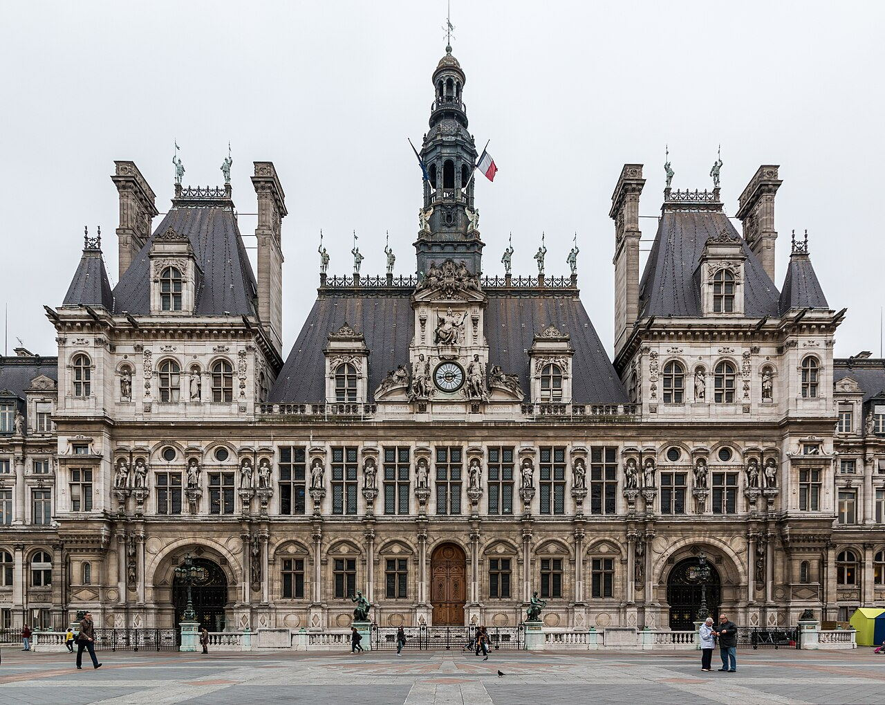
Neo-Renaissance city hall fronting a busy plaza once called Place de Grève.
Third Republic rebuilding after the 1871 fire during the Commune.
Political heart of Paris with seasonal ice rink and exhibits in the courtyard.
Hôtel des Invalides
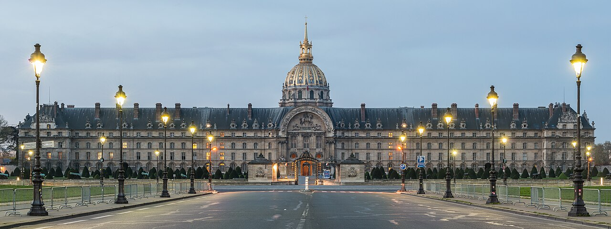
Baroque military complex with golden dome over Napoleon's tomb and Army Museum collections.
Louis XIV founded the hospital and church for wounded veterans in the late 17th century.
French military history from armor to World Wars in adjoining galleries.
Musée du Louvre

World-famous museum in a former royal palace; glass pyramid entrance by I. M. Pei.
Fortress origins; Louvre palace grew across centuries; museum opened after the Revolution.
From ancient near east to Renaissance painting—plan by wing or accept getting lost elegantly.
Jardin du Luxembourg

Formal French garden around the Senate palace—ponds, statues, and iconic green chairs.
Marie de' Medici commissioned the palace in the 1610s; public garden evolved over centuries.
Neighborhood-scale calm between Latin Quarter and Saint-Germain.
Hôtel Biron
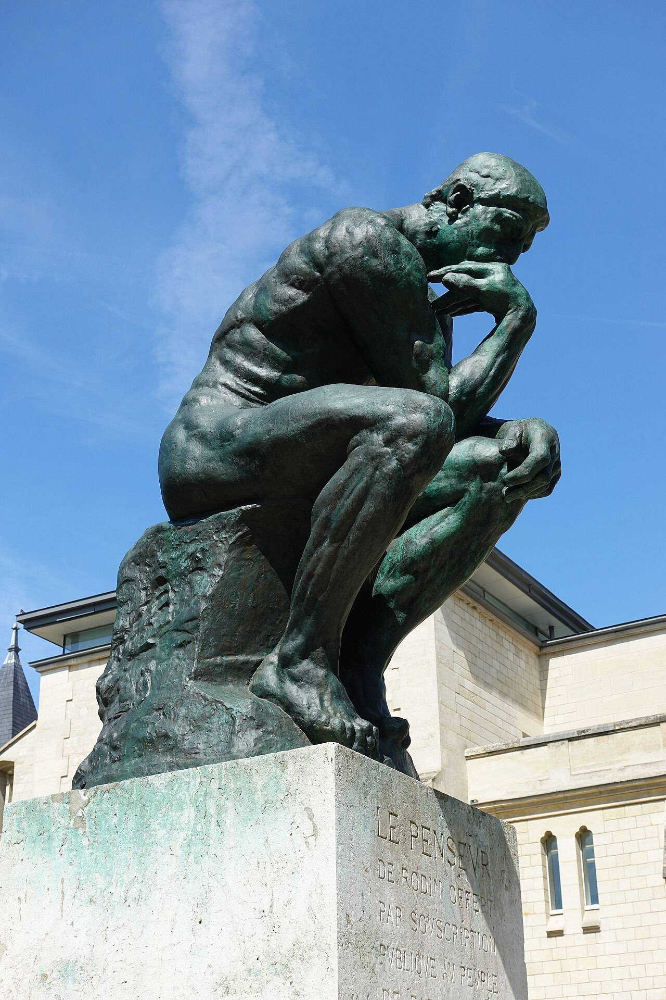
Musée d'Orsay

Former railway station housing Impressionist masterpieces, sculpture, and decorative arts.
Gare d'Orsay's train hall became a museum in the 1980s.
Single visit can cover Monet, Van Gogh, Degas, and the Belle Époque clock views.
Musée national du Moyen Âge

Cathédrale Notre-Dame de Paris

Medieval Gothic cathedral famous for its west façade, rose windows, and flying buttresses.
Construction spanned centuries from the 12th century; fire in 2019 led to a major restoration project.
Liturgical heart of Paris and setting of Hugo's novel—exterior viewing remains moving.
Opéra Garnier
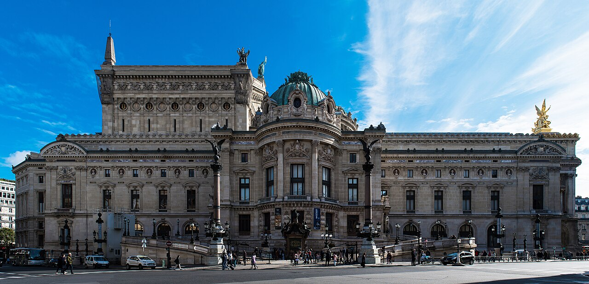
Second Empire opera house with marble staircases, Chagall-painted ceiling, and gilded auditorium.
Opened in 1875; setting of Leroux's Phantom tale.
National ballet and opera venue plus self-guided daytime visits.
Panthéon

Neoclassical church turned secular temple housing the remains of distinguished French citizens.
Revolutionary redesign of Soufflot's church; Foucault's pendulum once hung beneath the dome.
Panthéon burials read like a canon of literature, science, and resistance.
Parc Monceau

Pavillon de Flore

Riverside pavilion at the Louvre's western end—part of the museum wing facing the Tuileries Garden.
Named for Flore; rebuilt after 19th-century fires; unified with the Louvre museum circuit today.
Framing shot between garden allées and Seine traffic.
Place Vendôme
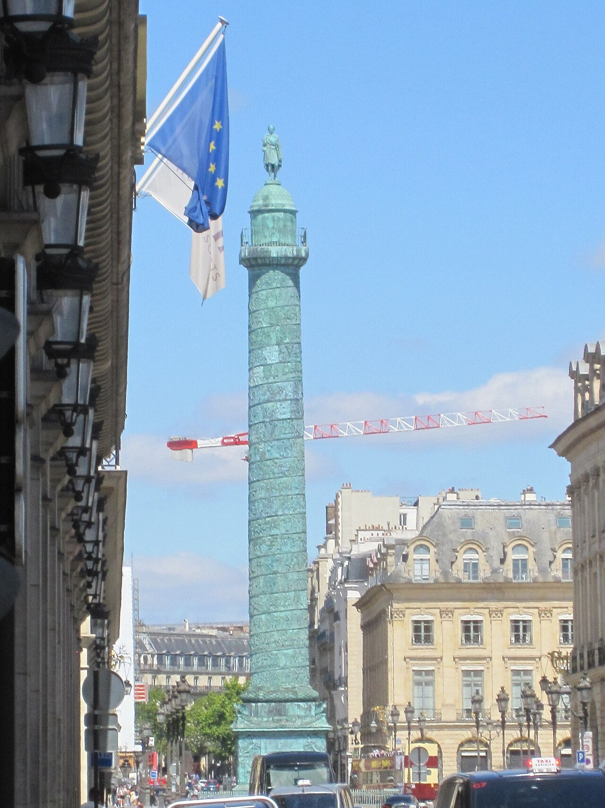
Octagonal square with Vendôme column—center of high jewelry maisons and the Ritz.
Laid out under Louis XIV; column replaced after the Commune pulled down the original imperial statue.
Architecture of continuous arcades defines luxury retail Paris.
Place de la Concorde
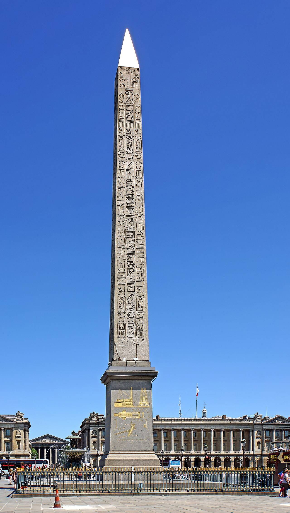
Vast octagonal square with fountains and the Luxor obelisk at the historic heart of royal and revolutionary Paris.
Site of the guillotine during the Terror; obelisk erected in the 1830s.
Link between the Tuileries, Madeleine, and Champs-Élysées.
Le Marais
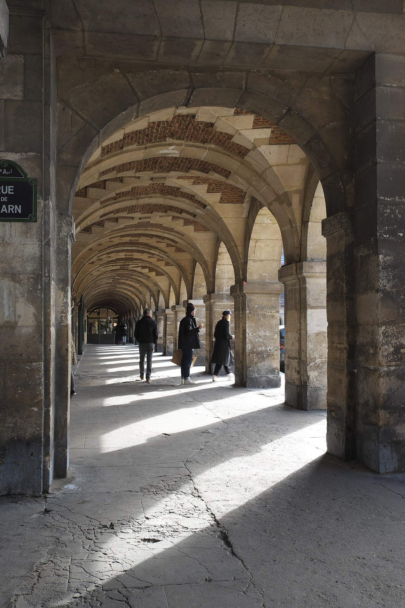
Pont Alexandre III
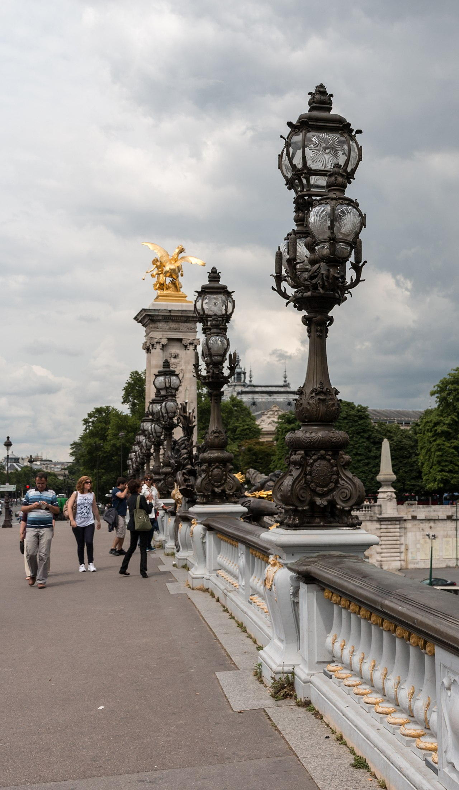
Beaux-Arts bridge rich with gilt lampposts and stone allegories—favorite film and parade backdrop.
Opened for the 1900 Exposition Universelle; named for the Russian tsar.
Frames Invalides on one side, Grand and Petit Palais on the other.
Pont Neuf

Despite the name 'new bridge,' the oldest standing bridge across the Seine in Paris with mascarons along the parapets.
Completed in the early 1600s under Henri IV.
Connects the tip of the island to both banks near the Louvre.
Pont des Arts
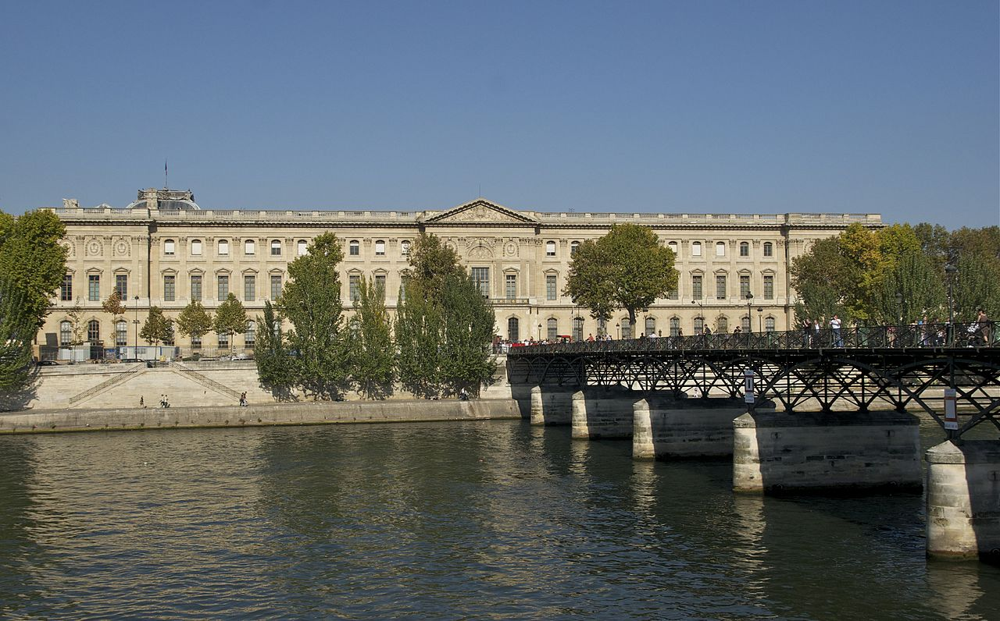
Cimetière du Père-Lachaise

Basilique du Sacré-Cœur de Montmartre

Romano-Byzantine basilica with chalk-white domes atop Montmartre—panoramic over northern Paris.
Consecrated in 1919; built as national vow after the Franco-Prussian War and Commune.
Pilgrimage church and sunset viewpoint above winding village streets.
Sainte-Chapelle
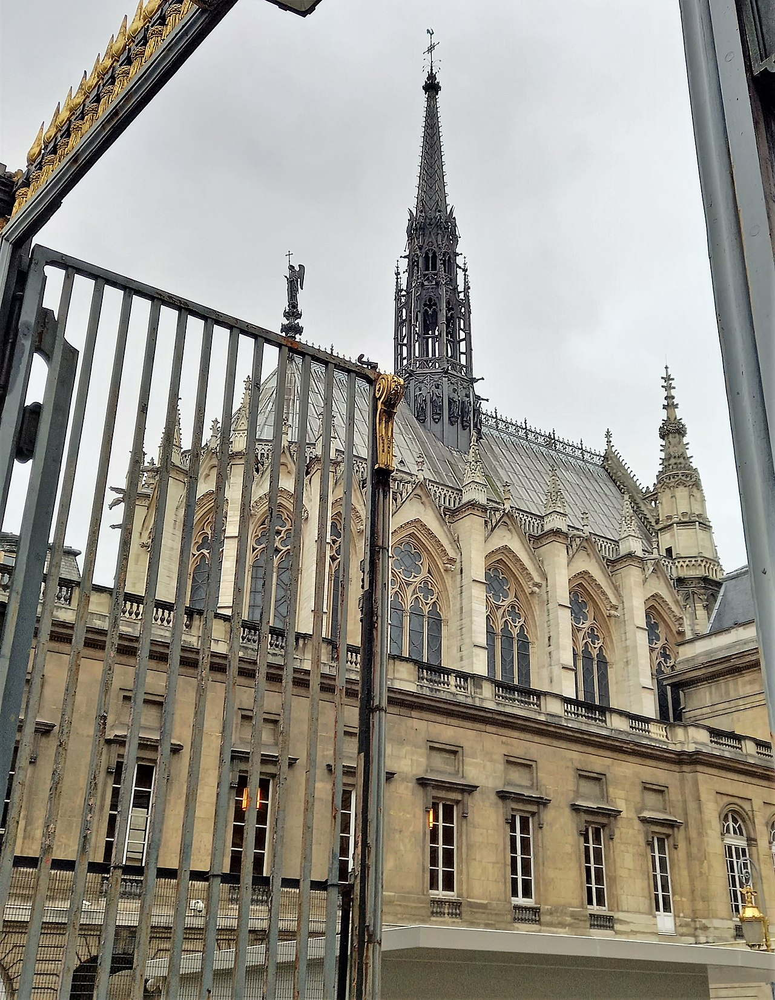
Royal chapel famed for upper-level stained glass telling biblical narratives in jewel tones.
Built by Louis IX in the 1240s to house Passion relics.
Gothic Rayonnant masterpiece—interior visits reward slow looking.
Jardin des Tuileries